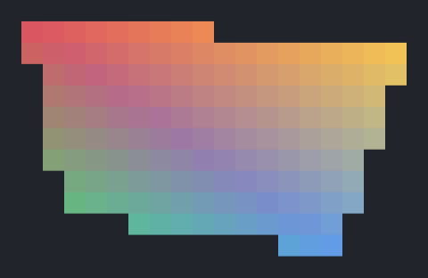
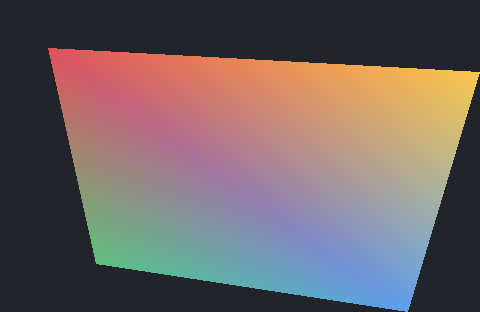

Das „Hello, World!“ für WebGL in Kapitel 1 zeichnet ein Dreieck, dessen Eckpunkte eine Position (x,y) und eine Farbe (r,g,b) haben. Die Eckpunkte liegen hintereinander in einem Vertex-Array, fünf Floats pro Eckpunkt. Ein Float hat 4 Bytes, ein Eintrag ist also (2+3)⋅4=20 Bytes lang (stride). vertexAttribPointer gibt für jedes Eckattribut an, wie viele Zahlen es hat und ab welchem Byte eines Eintrags es steht:
Der Vertex-Shader läuft einmal für jeden Eckpunkt. Seine in-Variablen enthalten die Eckattribute dieses Eckpunkts, und in gl_Position gibt er an, wo der Eckpunkt liegt, in normalisierten Gerätekoordinaten (NDC), in denen die Canvas von −1 bis 1 reicht (Kapitel 3, Canvas & Viewport). Auf dieser Seite werden Punkte in Pixelkoordinaten (x,y) eines Rasters angegeben, mit (0,0) in der linken oberen Ecke wie in der Übung „Graustufen und Dithering“; der Vertex-Shader rechnet sie in NDC um.
Danach bestimmt die GPU, welche Pixel das Dreieck darstellen. Pixel (i,j) ist das Quadrat von (i,j) bis (i+1,j+1), und es gehört zum Dreieck, wenn sein Pixelzentrum (i+0.5,j+0.5) im Dreieck liegt (Kapitel 3, Dreiecksrasterisierung – Beispiel-Implementierung). Das Dreieck wird also nur an den Pixelzentren abgetastet. Für jedes Pixel, das dazugehört, entsteht ein Fragment, und für jedes Fragment läuft einmal der Fragment-Shader. Er berechnet die Farbe des Fragments oder verwirft es (Kapitel 3, OpenGL-Rasterisierungspipeline); nach discard; schreibt er nichts ins Raster.
Wo ein Punkt p relativ zum Dreieck {v0,v1,v2} liegt, beschreiben seine baryzentrischen Koordinaten (α,β,γ) (Kapitel 3, Dreiecke – Baryzentrische Koordinaten). Sie sind die Gewichte, mit denen sich p aus den Eckpunkten zusammensetzt:
p=αv0+βv1+γv2,α+β+γ=1.
Im Inneren des Dreiecks liegen alle drei zwischen 0 und 1, auf einer Kante ist eine von ihnen 0, an einem Eckpunkt ist eine 1 und die anderen sind 0, und außerhalb ist mindestens eine negativ. Ob ein Pixelzentrum im Dreieck liegt, ist also eine Frage nach den Vorzeichen seiner baryzentrischen Koordinaten.
Die Demo zeigt ein Dreieck auf diesem Raster; die Punkte sind die Pixelzentren, und gefärbt sind die Pixel, für die ein Fragment entsteht. Die Eckpunkte lassen sich rechts eingeben oder mit der Maus ziehen, und für das Pixel unter der Maus stehen rechts die baryzentrischen Koordinaten seines Zentrums und seine Bytes.
Aufgabe 1: Pixel und baryzentrische Koordinaten
Setze die Eckpunkte auf v0=(1.5,1.5), v1=(17.5,1.5) und v2=(1.5,17.5). Berechne aus p=αv0+βv1+γv2 die baryzentrischen Koordinaten der Zentren der Pixel (5,7) und (13,5), und prüfe mit „α, β, γ“.
Welche Koordinate ist am Zentrum von Pixel (10,9) negativ, und warum gerade diese?
Verschiebe die Eckpunkte so, dass das Dreieck eine Fläche hat, aber kein Pixel grau wird. Wie oft laufen dann der Vertex-Shader und der Fragment-Shader, und warum?
Mit den baryzentrischen Koordinaten werden auch Eckattribute interpoliert, zum Beispiel die Farben c0,c1,c2 der Eckpunkte:
c=αc0+βc1+γc2.
Das übernimmt die GPU zwischen Vertex- und Fragment-Shader. Was der Vertex-Shader in eine out-Variable schreibt, kommt im Fragment-Shader in der in-Variable mit demselben Namen und Typ an, interpoliert für das Pixelzentrum des Fragments.
Lass die Eckpunkte aus der vorigen Aufgabe stehen und setze die Farben auf Rot, Grün und Blau. Welche Bytes bekommt Pixel (5,7)? Prüfe mit „Bytes (R, G, B)“.
Wie hängen die drei Bytes eines Pixels mit den baryzentrischen Koordinaten seines Zentrums zusammen?
Benenne die in-Variable im Fragment-Shader überall um, in der Deklaration und in main, aber nicht im Vertex-Shader, und klicke Run. Was meldet der Editor, und warum? Stelle danach den Namen wieder her.
Ob ein Pixelzentrum im Dreieck liegt, entscheidet die GPU mit Edge Function Testing (Kapitel 3, Dreiecksrasterisierung). Jede Kante vi→vj ist dabei eine gerichtete Linie, die die Ebene in zwei Halbräume teilt. Die Edge Function
Eij(x,y)=(yi−yj)x+(xj−xi)y+(xiyj−xjyi)
ist auf der Linie 0, im positiven Halbraum H+ größer als 0 und im negativen Halbraum H− kleiner als 0.
Welche Vorzeichen die drei Edge Functions im Inneren des Dreiecks haben, hängt von der Winding Order ab, also von der Orientierung, in der die Eckpunkte v0,v1,v2 angeordnet sind (Kapitel 3, Edge Function Testing – Winding Order). Sie ergibt sich aus dem Vorzeichen von
Ist A>0, sind im Inneren alle drei Edge Functions positiv. Sind die Eckpunkte in der anderen Orientierung angeordnet, kehren sich die Vorzeichen aller Eij um, und bei A=0 liegen die Eckpunkte auf einer Geraden.
Die Edge Functions liefern auch die baryzentrischen Koordinaten eines Punktes p (Kapitel 3, Edge Function Testing: Baryzentrische Koordinaten). Diese sind die Quotienten der Teilflächen von p mit je zwei Eckpunkten und der Fläche des ganzen Dreiecks,
Getestet werden nur die Pixel in der Bounding Box des Dreiecks, geschnitten mit dem Raster, jeweils an ihrem Pixelzentrum.
Die Demo zeigt ein Dreieck und einen gelben Punkt p, an dem rechts die Edge Functions, A und die baryzentrischen Koordinaten stehen. Unter „Kante“ lässt sich eine Kante wählen; ihr positiver Halbraum erscheint dann grün und ihr negativer rot. Die Eckpunkte und p lassen sich mit der Maus ziehen.
Aufgabe 3: Edge Functions
Setze die Eckpunkte auf v0=(2,1), v1=(14,4) und v2=(5,11) und „Kante“ auf v0→v1. Auf welcher Seite des Pfeils ist E01 positiv, in Pfeilrichtung gesehen links oder rechts, und warum ist das die andere Seite als in der Vorlesung?
Sage die Vorzeichen von E01, E12 und E20 am Zentrum von Pixel (6,5) voraus und berechne dort α von Hand. Ziehe p dorthin und prüfe. Ziehe p danach um 4 Pixel nach rechts und 1 Pixel nach unten, also parallel zur Kante v0→v1. Welche der drei Edge Functions bleibt gleich, und was bedeutet das für γ?
Ziehe p vom Zentrum von Pixel (6,5) ein Pixel nach rechts und danach ein Pixel nach unten. Um wie viel ändert sich jede Edge Function bei jedem Schritt, und warum ist das für die Rasterisierung nützlich?
Liegt ein Pixelzentrum genau auf einer Kante, die zwei Dreiecke gemeinsam haben, darf das Pixel weder doppelt noch gar nicht gesetzt werden. Die Beispiel-Implementierung in Kapitel 3 zählt einen Punkt mit Eij=0 deshalb nur bei manchen Kanten zum Dreieck, nach der Top-Left-Konvention: Mit Δx=xj−xi und Δy=yj−yi gehört die Kante vi→vj dazu, wenn Δy>0 gilt oder wenn Δy=0 und Δx<0 gilt. Die Beispiel-Implementierung rasterisiert nur Dreiecke mit A>0, und bei ihnen sind das die rechten und die unteren Kanten. Entscheidend ist, dass jede gemeinsame Kante zweier Dreiecke genau einem von beiden gehört.
Schreibe einen Rasterisierer für Dreiecke mit Eckfarben, der auf der GPU läuft und mit Edge Function Testing selbst entscheidet, welche Pixel zu einem Dreieck gehören, statt die GPU die Dreiecke rasterisieren zu lassen. Rufe deinen Code aus start (src/solution/index.ts) auf; das Ergebnis erscheint in der Demo unter dieser Aufgabe.
Das Ergebnis soll mindestens zwei Dreiecke mit einer gemeinsamen Kante auf einem Raster zeigen, dessen Pixel man einzeln erkennt; Eckpunkte und Farben sollen sich einstellen lassen. Die Eckpunkte werden wie auf dieser Seite in Pixelkoordinaten angegeben, mit y nach unten. Dafür brauchst du aus Kapitel 3 das Edge Function Testing mit der Top-Left-Konvention und die baryzentrischen Koordinaten.
Zeichne das Quadrat von (0,0) bis (8,8) als die Dreiecke (0,0),(8,0),(8,8) und (0,0),(8,8),(0,8), einmal mit dem ersten und einmal mit dem zweiten Dreieck zuerst gezeichnet. Welches Dreieck färbt in deinem Bild die Pixel auf der Diagonalen, und warum?
Vertausche zwei Eckpunkte eines der Dreiecke. Gehört in deinem Bild noch jedes Pixel der gemeinsamen Kante zu genau einem Dreieck? Wenn nicht: Welche Pixel fehlen oder wechseln mit der Reihenfolge, und warum?
Stelle die Eckpunkte und Farben eines deiner Dreiecke auch in der ersten Demo dieser Seite ein. Setzt die GPU dort andere Pixel als dein Rasterisierer? Wenn ja, welche, und was folgt daraus für ihre Regel?
Mögliche Lösung anzeigen

Auf Pixelebene: zwei Dreiecke mit einer gemeinsamen Kante und interpolierten Eckfarben auf einem Raster aus großen Pixeln

In voller Auflösung: dieselben Dreiecke 24-mal so groß, ein Pixel des Rasters pro Pixel des Bildes
Aufgabe 5: Rasterisierer auf der CPU (optional)
Schreibe deinen Rasterisierer noch einmal als Schleife auf der CPU, wie die Beispiel-Implementierung des Edge Function Testings in Kapitel 3, und vergleiche ihn mit deiner Version auf der GPU. Auch er startet aus start (src/solution/index.ts) und zeigt sein Ergebnis in der Demo oben. Ideen: die Bounding Box als Grenzen der Schleifen, die Edge Functions schrittweise weiterrechnen, wenn x oder y um 1 wächst, dieselbe Regel für gemeinsame Kanten, und beide Versionen nebeneinander oder abwechselnd zeigen.